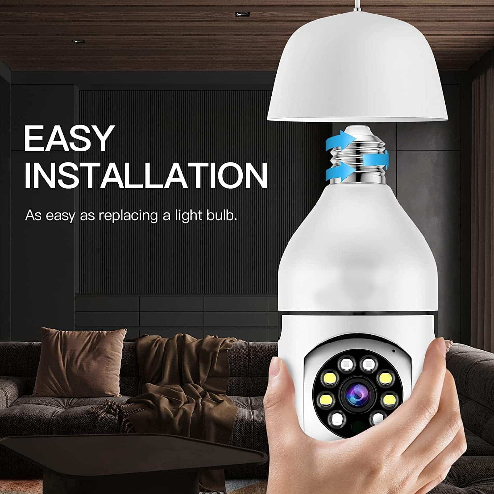
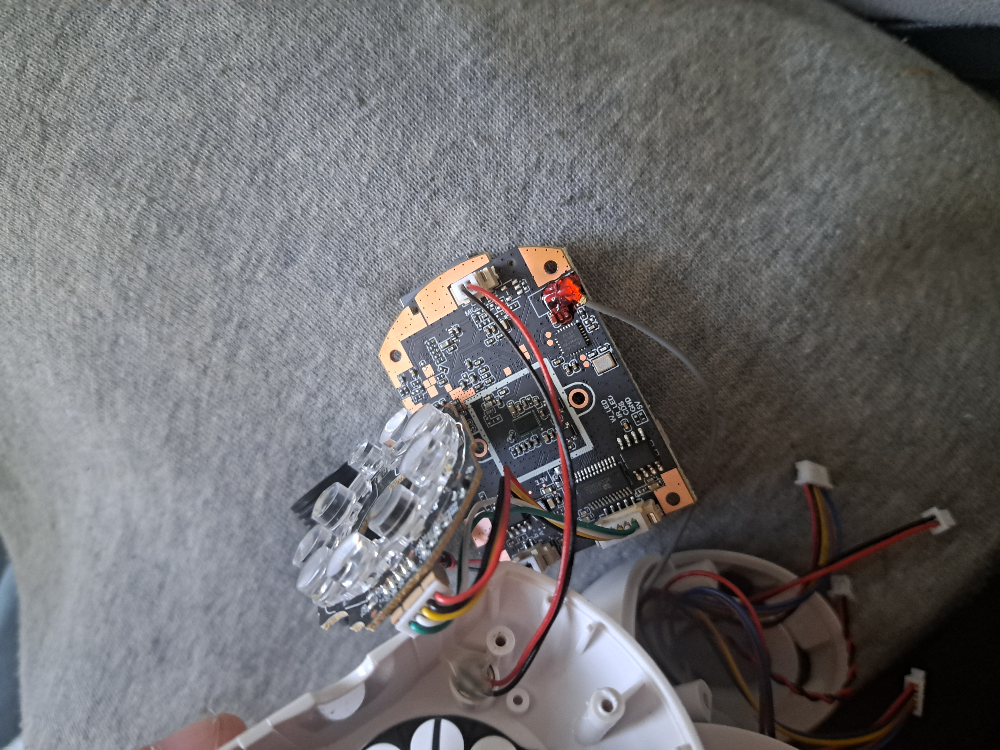
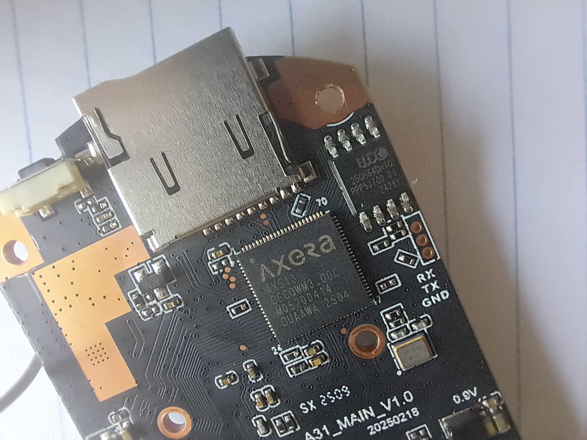
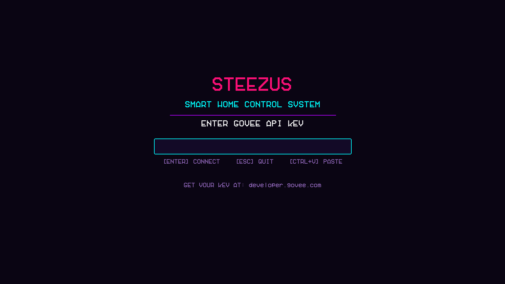
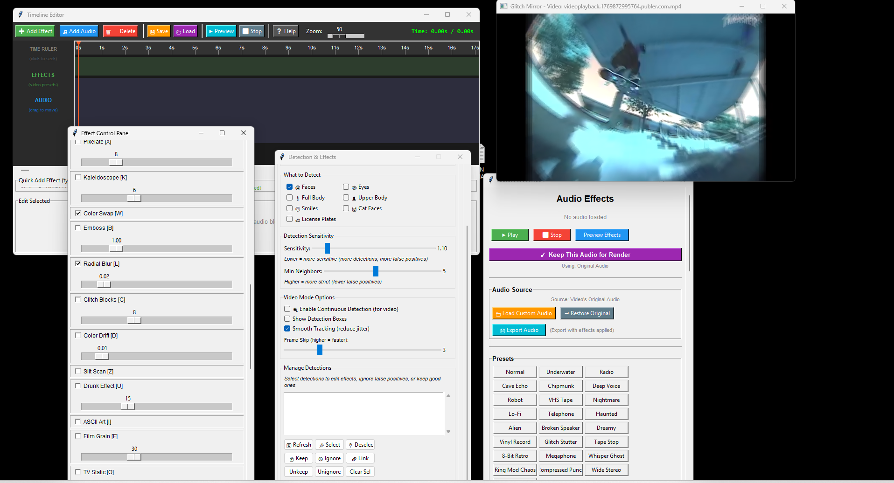
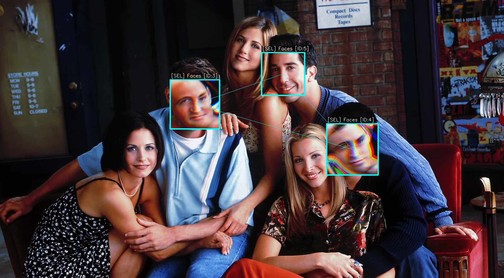
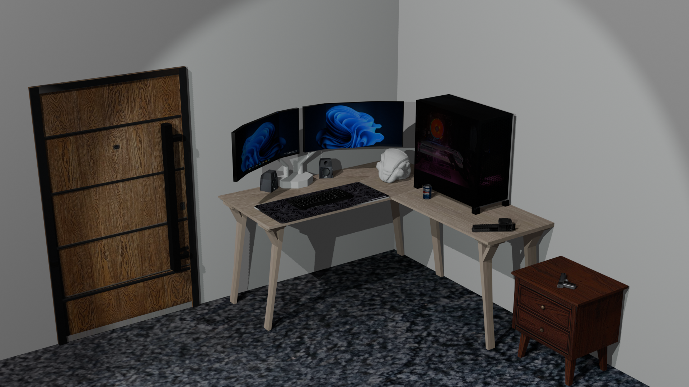
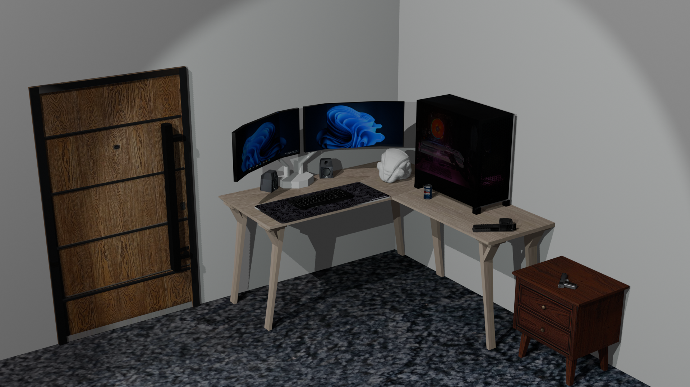

About Me
Hi, I'm Jimmy. I'm a former Active Duty U.S. Navy Sailor with
six years of honorable service. Near the end of my contract, I discovered
programming, and it quickly became a passion.
Over the past several months, I've spent countless hours building projects
and learning by doing. I've worked on everything from
stock market simulations in Pygame to
making custom toolsets in new and unique environments,
as well as web development projects like this one.
I'm actively seeking internships, entry-level roles, or training
opportunities where I can continue to grow as a developer.
I'm motivated, disciplined, and eager to learn.
Projects
IP Camera Security Analysis (Home Lab)
Embedded systems security analysis and reverse engineering



This ongoing home lab focuses on analyzing the security posture of a consumer IP camera
from both an attacker and defender perspective.
Initial analysis focused on understanding how the device is accessed during normal operation.
Using Wireshark and Kali Linux, I inspected network traffic generated
by the mobile companion application. This revealed that the camera is
not accessed directly by the mobile app; instead, the app communicates with a
remote cloud service that authenticates the user and brokers access to the camera feed.
Because the camera relied on a cloud-mediated control path rather than direct local access,
I shifted focus to services exposed by the device itself. Network service enumeration
identified an active Telnet service, which appeared to operate independently
of the cloud authentication flow and therefore represented a significantly softer local
attack surface.
To investigate authentication behavior further, I physically accessed the device, identified
the flash chip and used a logic analyzer to dump the firmware directly from
the board. The extracted image was analyzed in Ghidra to examine how network
services and credentials were implemented internally.
Although the firmware was compressed using a proprietary format, this limitation led to
identifying an additional attack surface: exposed UART pins on the PCB.
The next phase involves interfacing with UART to assess boot-time output, console access,
and potential privilege escalation paths.
This project has strengthened my understanding of
IoT communication models and embedded attack surfaces.
Pygame Stock Market Simulation
A data-driven stock market simulator with real-time price and volume modeling
This project significantly deepened my understanding of
object-oriented programming and the importance of
well-structured, maintainable data systems.
Early on, I faced challenges managing a large JSON-based data schema
containing roughly 2,000 data points per stock, including
simulated volume, OHLC data, and real-time price updates.
As complexity increased, JSON I/O became a performance bottleneck.
Recognizing this, I refactored the data layer to use
SQLite, designing a schema optimized for frequent reads
and writes. This change significantly improved performance and scalability.
Modular Crafting & Sprite Generation System
A procedural weapon crafting and sprite generation prototype built in Python
I began this project by applying lessons learned from my simulation work,
particularly around class design and
modular architecture.
This led to a dynamic sprite generation system paired with shape-based
crafting logic. A dedicated object factory generates thematically
consistent weapons based on selected materials and their elemental
properties.
These attributes influence both visual components and procedurally
generated prefix and suffix names, significantly reducing manual asset
creation and saving development time.
Steezus - A Retro Smart Home Controller
A Pygame-based smart home control panel with a retro 80s aesthetic


This project integrates the Govee REST API to discover and control
real smart home devices through a fully custom Pygame interface — no web browser, no
third-party dashboard. The entire UI is hand-built inside a Pygame render loop.
On first launch, an API key entry screen collects credentials and saves them locally
(git-ignored). The app then queries the Govee /v1/devices endpoint and
passes the response through a DeviceFactory that constructs typed
SmartDevice objects for every device on the account — keeping the
API layer cleanly separated from the UI.
The interface divides into a device sidebar and a command panel, with a VHS bitmap font
and scanline-era styling throughout. This project pushed my understanding of
API integration, object-oriented design,
and building polished, self-contained desktop applications from scratch.
Glitch Editor - A Live Visual Effects Studio
A real-time image, video, and webcam editor with a timeline-based effects pipeline built on OpenCV


This project is a live visual effects tool that applies
OpenCV-powered filters and distortions to still images, video files,
or a live webcam feed in real time. Effects can be stacked and sequenced using a
timeline system, giving the user precise control over when each
transformation activates.
Building the timeline required designing a small scheduling layer on top of the
OpenCV frame pipeline, each effect is treated as a discrete, time-bound operation
that the renderer steps through frame by frame. This forced careful thinking around
state management and keeping processing overhead low enough to
maintain a responsive feed.
This project deepened my understanding of real-time frame processing,
computer vision tooling, and building systems where timing and throughput directly
affect user experience.
Tactical Isometric Tile Engine
A performant, systems-driven battlefield engine built from the ground up in Python
This project is a major evolution of my earlier tile-based experiments,
focused on building a scalable, real-time procedural rendering pipeline
suitable for tactical and strategy gameplay.
The engine procedurally renders a large isometric battlefield composed of layered tiles
and dynamic entities. A custom camera system supports smooth panning, zooming, and precise
screen-to-world interaction.
To address performance constraints, I implemented aggressive viewport culling,
minimized redundant draw calls, and refactored rendering logic into tightly scoped systems.
These changes resulted in a significant FPS improvement while maintaining visual clarity.
Beyond rendering, the engine integrates grid-based movement, action dispatching, and a modular
battle architecture designed to support turn-based combat, abilities, and future AI behavior.
This project reflects my current approach to development: designing systems with
clear responsibilities, measurable performance goals, and long-term extensibility.


 
